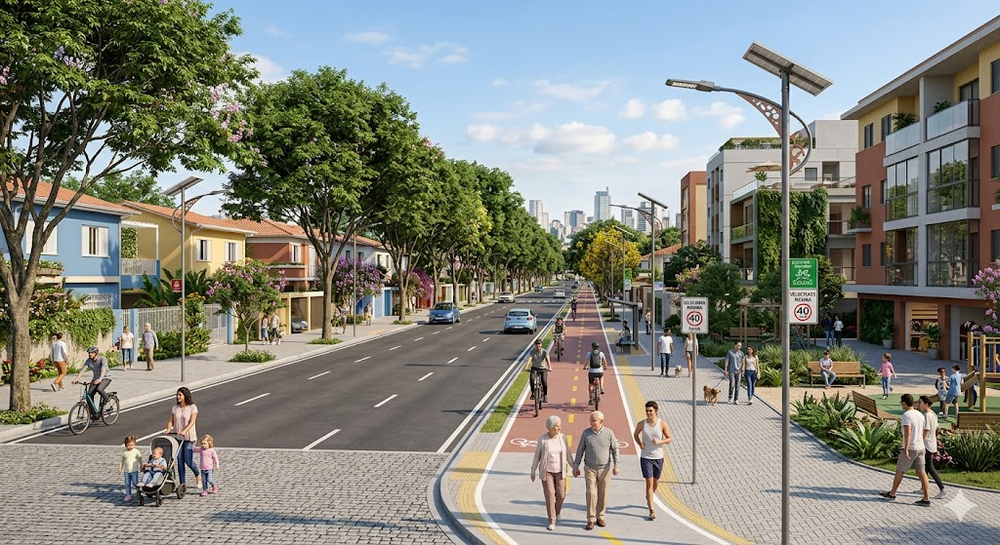

Chácara Nani
Como é hoje: Ruas sujas, pouco ou nenhum policiamento e sem áreas de lazer.
Como imagino em 2036: Mais policiamento, ruas limpas e áreas de lazer e atividades fisicas.
 Ver no Google Maps
Ver no Google Maps

Como é hoje: Ruas sujas, pouco ou nenhum policiamento e sem áreas de lazer.
Como imagino em 2036: Mais policiamento, ruas limpas e áreas de lazer e atividades fisicas.
Ver no Google Maps
Como é hoje: Ruas sujas, pouco espaço entre as ruas, para os carros passarem, e sem áreas para atividades fisicas.
Como imagino em 2036: Ruas limpas, lugares para atividades fisicas e espaço para os carros passarem.
 Ver no Google Maps
Ver no Google Maps
Com meu conhecimento em TI iria incentivar o descarte correto de eletronicos. Criaria um projeto comunitario para ensinar pessoas a mexer com tecnologia, assim concientizando as pessoas. Desenvolver um sistema que ajude a cuidar das arvores, ajudando a regar, para a comunidade. Criar um app ou um site para monitorar as ruas, assim saber como estão e se precisam de alguma limpeza.
Crie uma imagem do bairro Parque São José em 2036. Adicione ruas limpas e arborizadas, iluminação pública moderna, ciclovias, calçadas largas, casas e prédios bem conservados, pessoas caminhando com segurança durante o dia. Estilo: realista e alta qualidade.
Crie uma imagem do bairro Chácara Nani daqui a dez anos. Inclua árvores, lago, ciclovias, pessoas caminhando, áreas de atividades físicas, ambiente tranquilo e seguro. Estilo: realista e alta resolução.
Crie uma imagem do bairro Valo Velho em 2036. Adicione pessoas passeando com cachorros, ruas limpas, clima agradável, área de lazer e policiamento nas ruas. Estilo: realista e detalhado.